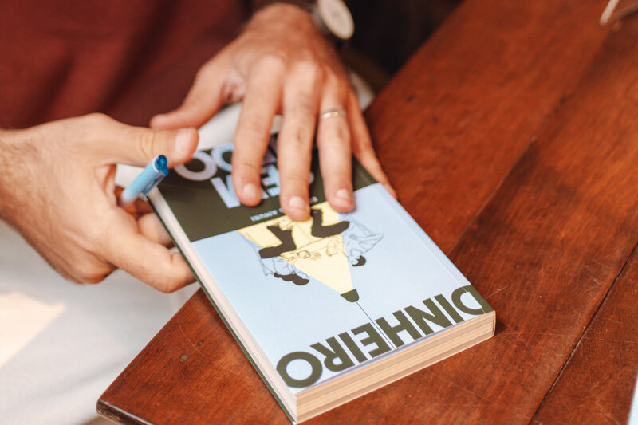

Pessoas queridas, no Dinheiro Sem Medo, vocês encontrarão um pouco do que aprendi nos últimos 15 anos dedicados integralmente a projetos relacionados à inteligência financeira.
O livro é prático e pé no chão. A organização financeira, o universo dos investimentos e todas as questões que giram ao redor das finanças pessoais estão por aqui – e eu não poderia ter ficado mais feliz com o resultado.
A primeira versão foi escrita em 2015 (!) e lida por mais de 20 mil pessoas. Resolvi reescrevê-lo em 2025, de modo que passasse a contemplar minha visão atual, completamente embasada nas ciências comportamentais.
Sinto que o novo texto se beneficiou das minhas experiências mais recentes, apoiando inúmeras famílias, formando planejadores financeiros independentes e atuando como especialista em projetos de maior escala junto a instituições públicas e privadas, como o Banco Central do Brasil e a Anbima.
A nova versão conta também com mais piadas ruins, para as quais me julgo digno e merecedor, agora que sou pai.
Eu acredito, do fundo do coração, que não há nada mais poderoso do que encontrar confidentes financeiros. Pessoas com quem podemos trocar de maneira aberta, franca, real. Desconfio que presentear alguém com um livro sobre o tema pode servir de gancho para que esse aspecto da relação floresça.
Por isso, se fizer sentido, te incentivo a comprar um exemplar para você e outro para um grande amigo, com desconto extra. Os dois exemplares saem por R$ 120, com frete grátis.
Quero dois exemplares, com desconto!Caso prefira comprar apenas um exemplar, por R$ 67 (e frete grátis), venha por aqui→
"Criamos um patrimônio sólido – e colocamos um novo CPF no mundo"
Cada exercício foi fundamental para levar dois farmacêuticos muito desconectados do mundo das finanças a criar e organizar um patrimônio sólido. Recomendo imensamente – ensina de forma objetiva, clara e acessível o que deveria ser ensinado desde a infância: a organizar a vida financeira com tranquilidade e sem malabarismos.
Carla Silva
"Recuperei a capacidade de sonhar"
Estava muito ansioso com minhas finanças. Me sentia perdido em um mar de informações. Entrar em contato com o trabalho do Amuri foi como colocar os pés em terra firme. Consegui entender os meus gastos e aprendi a investir com autonomia, de forma simples. Recuperei a capacidade de sonhar.
Guilherme Capanema
"Estou me aposentando este mês, com tranquilidade, sem dívidas"
Entrar em contato com o trabalho do Amuri foi uma alegria. Procurei-o porque queria me aposentar. Bem, com sua ajuda valiosa, consegui atingir essa meta. Estou me aposentando este mês, com tranquilidade, sem dívidas, com uma reserva de emergência e cheia de energia para olhar e receber o que a vida tem pra me trazer. Obrigada, Amuri!
Adriana Renan
"O melhor investimento que já fiz"
Estive completamente perdido, com os limites do cheque especial estourados e várias dívidas. Falar sobre finanças nunca foi um assunto simples para mim. A abordagem do Amuri, clara e simples, fez toda a diferença para que, logo no primeiro mês, a proximidade com seu trabalho surtisse efeitos muito positivos. Hoje, com vida organizada e todas as dívidas pagas, acredito que me aproximar de seu trabalho tenha sido o melhor investimento que já fiz.
Vitor Barreto
"Um verdadeiro afago paterno no meio de um turbilhão de especialistas"
O livro é excelente. O Amuri tem uma didática ímpar, e divide seus ensinamentos com uma leveza e uma sutileza que fazem qualquer pessoa leiga no assunto se interessar pelo tema. Um verdadeiro afago paterno no meio de um turbilhão de "especialistas" tentando vender cursos rumo ao "sucesso financeiro" e pessoas prepotentes que sempre acham que sabem de tudo. No Dinheiro Sem Medo, o Amuri te dá a mão e te convida pra um bate papo leve ao mesmo tempo sério e descontraído, sem pressão, sem a fórmula mágica para o sucesso. Ele entende que cada pessoa é única e te convida para pensar melhor no planejamento financeiro justamente para nos preocuparmos menos com isso.
Victor Gimenez
"A leitura é leve e surpreendentemente divertida"
Cada página do livro é necessária e contém ensinamentos importantes. Vai direto ao ponto, sem a enrolação característica de muitos livros sobre o tema. A leitura é leve e surpreendentemente, pelo gênero, divertida. É possível ler da maneira que melhor te interessar. Eu mesmo li o livro completamente fora de ordem, começando pelos capítulos que mais me interessavam, e sinto que foi melhor assim. O autor tem sensibilidade e sabe que nós, leitores, somos humanos que não queremos simplesmente ficar trancados num quarto até termos juntado nosso primeiro milhão, como alguns "conselheiros" e "youtubers" parecem sugerir. As mudanças indicadas pelo livro são muito menos dolorosas do que eu esperava.
Leonardo da Silva
"Este livro é um manual imprescindível para a vida adulta"
Desde que esse livro entrou em minha vida, tudo mudou. Sou autônoma e tinha uma dificuldade imensa em guardar dinheiro e passava um sufoco danado principalmente nos meses de férias escolares. O Amuri aborda de uma forma simples e didática vários assuntos relacionados a educação financeira para leigos e usa exemplos reais de pessoas que conseguiram sair do vermelho e realizar seus sonhos alcançando uma estabilidade financeira. Acredito que este livro seja um manual imprescindível para a vida adulta. Obrigada, Amuri!
Mariana Bernardes
"O texto é delicioso, leve como uma conversa em uma mesa de bar."
O Amuri transforma um assunto espinhoso e difícil em uma conversa franca, sem promessas mirabolantes, sem dourar a pílula, sem fórmulas mágicas. É aquele apoio amigo para quem quer se organizar financeiramente. E o texto é delicioso, leve como uma conversa em uma mesa de bar. Vale ter esse livro para ler e reler sempre que bater uma dúvida.
Taina Fiori
"Essencial pra qualquer adulto que lide com dinheiro no Brasil."
Um manual do bom senso com as finanças. Testando e pondo em prática aos poucos o que aprendi com esse livro consegui trazer muito mais clareza à minha organização, tendo uma noção melhor das consequências de cada decisão e escolhendo o que fazia mais sentido pra mim. Essencial pra qualquer adulto que lide com dinheiro no Brasil.
Victor Cruz
Não há porque negar, amigos. Livros sobre finanças são chatos e feios. Nem eu, que escolhi esse assunto para a minha vida, gosto deles. Quero acreditar que o Dinheiro Sem Medo é diferente – é o que dizem meus pais e meus melh… quero dizer, é o que dizem as milhares de pessoas que leram.
Experimentei uma série de rotas diferentes, sempre utilizando uma abordagem franca, para entregar, de forma palatável, algo que realmente possa ser aplicado na prática.
Estou especialmente ansioso para escutar o opinião de vocês sobre o Vidas Possíveis, meu capítulo favorito – escrevi sobre a vida financeira de um grupo de pessoas em 2015-2016 e consegui entrevistá-las novamente agora, quase dez anos depois, para saber o que mudou.
Para comprar o livro, venha por aqui→
Se surgir qualquer dúvida, você pode falar comigo através do eduardo@amuri.com.br ou do (11-991631373, é meu número pessoal, será um prazer 🙂
Um abraço grande e nos encontramos em breve!